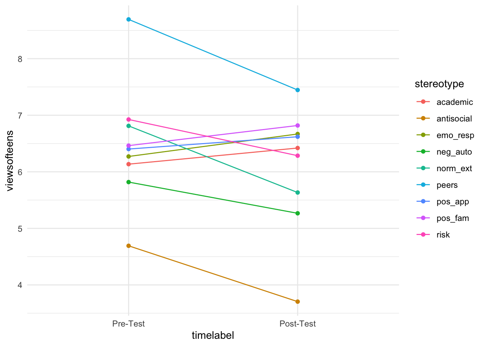
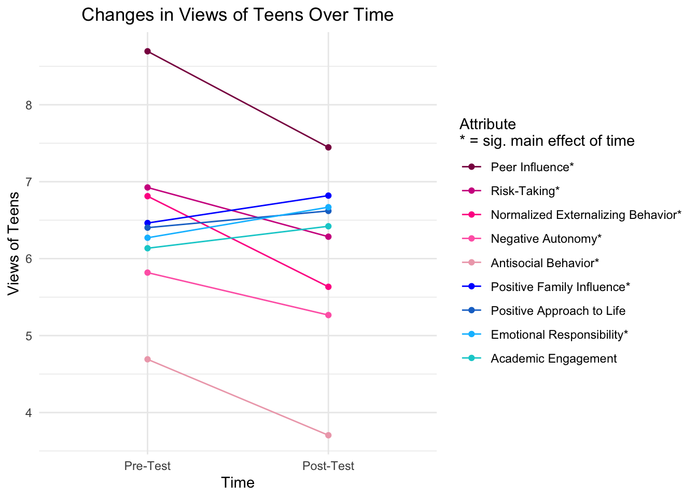

Using the same data from my previous portfolio piece, I want to condense the information about changes in views of teens over time into one figure for my conference poster. Because there was not a significant effect of condition, I will collapse across conditions and display just the overall main effect of time.
Using the same dataset from portfolio piece 2, for this project I will focus on the pre- and post-test scores on stereotypes about teens’ antisocial behavior, normalized externalizing behavior, risk-taking behavior, academic engagement, emotional responsibility, positive approach to life, positive family influence, negative autonomy, and peer influence. I did a (somewhat inefficient) wide-to-long transformation in this project to combine the pre- and post-test scores into single variables to be grouped by a separate stereotype variable. This transformation allowed me to combine changes in views of different stereotypes into a single plot.
My initial attempt at a main effects plot, followed by a cleaner, prettier final version for the poster.
On average, participants’ views of teens improved over the course of the study, with significant effects of time on all but two stereotypes.
library(haven)
library(tidyverse)
library(car)
library(rstatix)counterstereotype_data <- read_sav("/Users/sophieboyd/Desktop/Research/Buchanan/SRA/CollegeData.sav")counterstereotype_filtered <- counterstereotype_data %>%
select(RespID, Gender, Ethnicity, Race, Age, ExperimentalTreatment, VoT_MS_Antisocial,VOT_P2EB_ANTISOCIAL, VoT_MS_NEB, VOT_P2EB_NEB, VoT_MS_RT, VOT_P2EB_RT, VoT_MS_AE, VOT_P2AE, VoT_MS_ER, VOT_P2PA_ER, VoT_MS_PAL, VOT_P2PA_PATL, VoT_MS_PFI, VOT_P2_PFI, VoT_MS_NA, VOT_P2_NA, VoT_MS_PI, VOT_P2_PI) %>%
filter(!is.na(ExperimentalTreatment))counterstereotype_long <- counterstereotype_filtered %>%
pivot_longer(
cols = starts_with(c("VoT_MS", "VOT_P2")),
names_to = "time_stereotype",
values_to = "viewsofteens")counterstereotype_long <- counterstereotype_long %>%
mutate(time = ifelse(startsWith(time_stereotype, "VoT_MS"), 1, 2))
counterstereotype_long$timelabel <- factor(counterstereotype_long$time,
labels = c("Pre-Test", "Post-Test"))counterstereotype_long <- counterstereotype_long %>%
mutate(stereotype = ifelse(time_stereotype == "VoT_MS_Antisocial", "antisocial",
ifelse(time_stereotype == "VOT_P2EB_ANTISOCIAL", "antisocial",
ifelse(time_stereotype == "VoT_MS_NEB", "norm_ext",
ifelse(time_stereotype == "VOT_P2EB_NEB", "norm_ext",
ifelse(time_stereotype == "VoT_MS_RT", "risk",
ifelse(time_stereotype == "VOT_P2EB_RT", "risk",
ifelse(time_stereotype == "VoT_MS_AE", "academic",
ifelse(time_stereotype == "VOT_P2AE", "academic",
ifelse(time_stereotype == "VoT_MS_ER", "emo_resp",
ifelse(time_stereotype == "VOT_P2PA_ER", "emo_resp",
ifelse(time_stereotype == "VoT_MS_PAL", "pos_app",
ifelse(time_stereotype == "VOT_P2PA_PATL", "pos_app",
ifelse(time_stereotype == "VoT_MS_PFI", "pos_fam",
ifelse(time_stereotype == "VOT_P2_PFI", "pos_fam",
ifelse(time_stereotype == "VoT_MS_NA", "neg_auto",
ifelse(time_stereotype == "VOT_P2_NA", "neg_auto",
ifelse(time_stereotype == "VoT_MS_PI", "peers",
ifelse(time_stereotype == "VOT_P2_PI", "peers",
"x")))))))))))))))))))counterstereotype_long %>%
ggplot(aes(x = timelabel, y = viewsofteens, group = stereotype, color = stereotype)) +
stat_summary(fun=mean, geom="line") +
stat_summary(fun=mean, geom="point") +
theme_minimal() 
counterstereotype_long <- counterstereotype_long %>%
mutate(stereotypelabel = ifelse(stereotype == "antisocial", "Antisocial Behavior*",
ifelse(stereotype == "norm_ext", "Normalized Externalizing Behavior*",
ifelse(stereotype == "risk", "Risk-Taking*",
ifelse(stereotype == "academic", "Academic Engagement",
ifelse(stereotype == "emo_resp", "Emotional Responsibility*",
ifelse(stereotype == "pos_app", "Positive Approach to Life",
ifelse(stereotype == "pos_fam", "Positive Family Influence*",
ifelse(stereotype == "neg_auto", "Negative Autonomy*",
ifelse(stereotype == "peers", "Peer Influence*", "x"))))))))))counterstereotype_colors <- c("Antisocial Behavior*" = "pink2", "Normalized Externalizing Behavior*" = "deeppink", "Risk-Taking*" = "violetred", "Negative Autonomy*" = "hotpink", "Peer Influence*" = "deeppink4", "Academic Engagement" = "darkturquoise", "Emotional Responsibility*" = "deepskyblue", "Positive Approach to Life" = "dodgerblue3", "Positive Family Influence*" = "blue")counterstereotype_long <- counterstereotype_long %>%
mutate(stereotype_ordered = fct_relevel(stereotypelabel, 'Peer Influence*', 'Risk-Taking*', 'Normalized Externalizing Behavior*', 'Negative Autonomy*', 'Antisocial Behavior*', 'Positive Family Influence*', 'Positive Approach to Life', 'Emotional Responsibility*', 'Academic Engagement'))counterstereotype_long %>%
ggplot(aes(x = timelabel, y = viewsofteens, group = stereotype_ordered, color = stereotype_ordered)) +
stat_summary(fun=mean, geom="line") +
stat_summary(fun=mean, geom="point") +
labs(x = "Time",
y = "Views of Teens",
title = "Changes in Views of Teens Over Time",
color = "Attribute\n* = sig. main effect of time") +
theme_minimal() +
theme(plot.title = element_text(hjust = 0.5)) +
scale_color_manual(values=counterstereotype_colors)